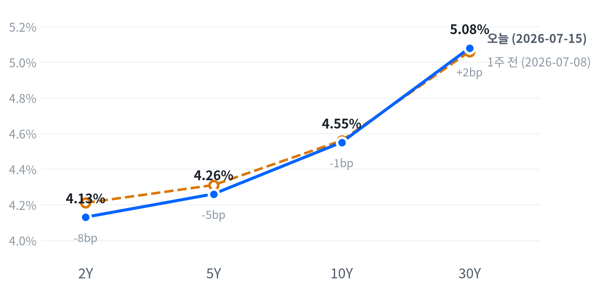

| 지수 | 종가 | 변동 | 등락률 |
|---|---|---|---|
| S&P 500 Value | 232.35 | +2.10 | +0.91% |
| Russell 2000 | 2,974.57 | -1.69 | -0.06% |
| Dow | 52,552.97 | -105.67 | -0.20% |
| S&P 500 | 7,533.77 | -38.63 | -0.51% |
| Nasdaq | 25,881.95 | -387.28 | -1.47% |
| S&P 500 Growth | 136.26 | -2.30 | -1.66% |
| 섹터 | 종가 | 변동 | 등락률 |
|---|---|---|---|
| Consumer Staples | 85.81 | +2.34 | +2.80% |
| Health Care | 161.80 | +3.51 | +2.22% |
| Energy | 57.02 | +0.52 | +0.92% |
| Materials | 50.89 | +0.39 | +0.77% |
| Utilities | 45.47 | +0.25 | +0.55% |
| Financials | 56.75 | +0.19 | +0.34% |
| Consumer Discretionary | 117.34 | +0.34 | +0.29% |
| Industrials | 180.15 | +0.09 | +0.05% |
| Communication Services | 112.65 | -0.73 | -0.64% |
| Technology | 177.52 | -4.06 | -2.24% |
엔비디아는 개별적으로 더 큰 진폭을 보여 11:00에 시가 대비 -2.10% 저점을 찍은 뒤 정오 무렵 +1.06% 고점까지 반등했다가 다시 밀려 마감했는데, 이는 TSMC 콘퍼런스콜 이후 반도체 업종 전반에 걸친 CAPEX 부담 재평가와 CXMT IPO발 D램 공급과잉 헤드라인이 오전~정오 사이 연이어 소화되며 변동성을 키웠다.
오후 들어 매도가 재차 강해진 흐름은 뉴욕 마감을 앞두고 반도체·메모리 롱 포지션의 리스크 축소(디레버리징)가 집중된 정황과 부합한다.
이번 하락은 지수 전체의 방향성 베팅이라기보다 반도체·메모리 밸류에이션에 대한 국지적 경계로 읽힌다. 나스닥과 S&P500 Growth가 각각 -1.47%, -1.66%로 부진한 반면 S&P500 Value는 +0.91%로 플러스를 지켰고, 헬스케어·필수소비재·유틸리티 등 방어 섹터가 일제히 강세를 보인 것이 그 방증이다. 러셀2000이 낙폭 -0.06%에 그친 것도 소형주 자체의 펀더멘털이 훼손됐다기보다 매도가 대형 반도체·메모리 종목에 집중됐음을 말해준다.
포지셔닝 관점에서는 반도체·메모리 익스포저를 낮추고 방어주·가치주로 일부 로테이션하되, 나스닥이 추가로 이틀 연속 1% 이상 밀리며 VIX가 18을 상향 돌파할 경우 리스크오프가 전방위로 확산될 신호로 보고 손절 기준을 점검할 필요가 있다.
동인: 이번 세션의 방향을 결정한 축은 크게 세 가지다. TSMC가 2분기 매출 YoY +36%, 순이익 +77.4%라는 호실적을 냈음에도 2026년 CAPEX 가이던스를 기존 520~560억달러에서 600~640억달러로 최소 40억달러 이상 상향하면서 "AI 밸류에이션이 투자 규모를 감당할 수 있는가"라는 오래된 질문이 다시 불거졌고, 알파벳의 Gemini 3.5 Pro 출시 지연 보도가 AI 상용화 속도에 대한 신뢰에 흠집을 냈다.
여기에 중국 CXMT의 8.6억달러 규모 IPO 추진 소식이 D램 공급과잉 우려를 촉발하며 SK하이닉스·샌디스크(-7%대)·마이크론(-5%대) 등 메모리 섹터 전반을 끌어내렸다. 세 촉매 모두 "AI 장기 성장 스토리의 붕괴"가 아니라 "투자 속도·공급 밸런스에 대한 단기 재평가"라는 공통분모를 갖는다.
크로스에셋 정합성: 주식·채권·원자재·FX 흐름은 서로 모순 없이 맞물린다. 반도체·메모리 리스크오프가 기술주 약세와 방어 섹터 로테이션으로 이어졌고, 동시에 이란발 유가 급등이 국채 수익률의 7/16 장중 반등(FRED 전일 하락과 반대 방향)과 달러 강세, 그리고 금의 안전자산 프리미엄 되돌림을 함께 설명한다. 즉 "반도체발 리스크오프"와 "지정학발 인플레이션 재점화 우려"라는 두 개의 서로 다른 동인이 같은 날 겹치면서 주식은 기술주 중심 조정, 채권은 단기물 강세·장기물 약세의 스티프닝, 통화는 달러 강세·원화 약세, 원자재는 금 약세·유가 되돌림이라는 정합적인 그림을 만들어냈다.
다음 촉매: 단기적으로는 GE 버노바(7/22)를 비롯한 AI 인프라·반도체 기업들의 2분기 실적에서 CAPEX 가이던스가 추가로 상향되는지, CXMT IPO 관련 후속 보도(가격 밴드·수요예측)가 D램 공급과잉 우려를 확인시키는지가 메모리·반도체 섹터의 방향을 가를 변수다. 매크로 측면에서는 7/28-29 FOMC와 8월 발표될 7월 CPI가 9월 인상 프라이싱(현재 CME FedWatch 기준 동결 51.2% vs 25bp 인상 44.0%)의 향방을 결정할 핵심 이벤트로, 이란·호르무즈 리스크의 추가 확산 여부와 함께 다음 1~2주 리스크 관리의 축이 될 전망이다.
| 만기 | 수익률(07-15, FRED 확정) | 전일대비 | 1주 전(07-08) | 주간 변화 | 07-16 장중 참고치(Yahoo) |
|---|---|---|---|---|---|
| 2Y | 4.13% | -5bp | 4.21% | -8bp | 데이터 없음 |
| 5Y | 4.26% | -5bp | 4.31% | -5bp | 4.28% (+2bp) |
| 10Y | 4.55% | -3bp | 4.56% | -1bp | 4.57% (+2bp) |
| 30Y | 5.08% | 0bp | 5.06% | +2bp | 5.10% (+2bp) |

2s10s 스프레드는 07-15 FRED 확정 기준 +42bp로, 1주 전(07-08, 2Y 4.21%·10Y 4.56% 기준 +35bp) 대비 +7bp 확대됐다. 주간 기준으로 2Y가 -8bp, 5Y가 -5bp 하락한 반면 30Y는 +2bp 상승해 단기물 중심의 강세(가격 상승)와 장기물의 소폭 약세가 동시에 나타나며 커브가 스티프닝됐다.
주간 기준 커브 변화는 단기물이 장기물보다 훨씬 큰 폭으로 강세(2Y -8bp vs 30Y +2bp)를 보인 스티프닝으로, CPI·PPI 연속 서프라이즈(예상 하회)로 9월 추가 인상 프라이싱이 완화된 영향이 단기물에 집중 반영된 결과다. 다만 30Y가 오히려 소폭 상승했다는 점에서 순수한 "불 스티프닝(정책 완화 기대 주도)"으로 단정하기는 어렵고, 이란발 유가 급등이 자극한 기간프리미엄·인플레이션 재점화 우려가 장기물에 얹힌 "베어 요소"가 혼재된 모습이다.
07-16 장중 Yahoo 참고치에서 5Y·10Y·30Y가 일제히 전일 대비 +2bp 오른 것은 이 베어 요소가 당일 들어 더 강해졌을 수 있다는 신호다. 유가 상승세가 지속되면 스티프닝의 무게중심이 베어 스티프닝 쪽으로 옮겨갈 여지도 열어둬야 한다.
듀레이션 전략 측면에서는 단기물(2·5년) 강세가 이미 상당 부분 CPI·PPI 서프라이즈를 소화한 만큼 여기서 추가 듀레이션 확대보다는 커브 스티프너(단기 매수·장기 매도 또는 언더웨이트) 포지션의 우위가 이어질 개연성이 높고, 장기물은 유가·지정학 리스크가 재차 확대될 경우 변동성이 커질 수 있어 30Y 익스포저는 인플레이션 헤지(TIPS 등) 병행 없이는 비중을 늘리지 않는 편이 낫다.
| 페어 | 종가 | 변동 | 등락률 |
|---|---|---|---|
| DXY | 100.71 | +0.21 | +0.21% |
| USD/KRW | 1,477.72 | -10.16 | -0.68% |
| USD/JPY | 162.34 | +0.15 | +0.09% |
| EUR/USD | 1.1447 | +0.0022 | +0.19% |
엔·달러(USD/JPY)는 도쿄 오전장인 08:00 ET(현지 저녁)에 시가 대비 -0.08%로 저점을 찍은 뒤 완만히 되돌아, 뉴욕장 마감 무렵인 17:00 ET에 +0.27% 고점을 찍었다. 엔 약세가 하루 종일 점진적으로 진행된 셈이다.
DXY가 +0.21% 강세를 보인 것은 이란발 지정학 리스크에 따른 안전자산 수요와 국채 수익률의 7/16 장중 반등(위 채권 섹션 참고)이 겹친 결과다. 원화는 -0.68% 약세로 달러 대비 가장 큰 폭으로 밀렸는데, SK하이닉스·삼성전자 등 국내 메모리 대표주의 급락(-11.5%, -8.8%)이 코스피 자금 이탈과 맞물리며 원화를 끌어내렸다. 엔화는 안전자산 수요에도 불구하고 소폭 약세(+0.09%, 즉 엔 약세)를 보여 미 국채 수익률 상승에 따른 미일 금리차 확대가 더 크게 작용했다. 유로는 달러 강세 국면에서도 +0.19% 상승해 상대적으로 견조했다.
| 품목 | 종가 | 변동 | 등락률 |
|---|---|---|---|
| Gold | 3,979.10 | -64.90 | -1.60% |
| Natural Gas | 2.90 | -0.03 | -0.92% |
| WTI | 79.05 | -0.55 | -0.69% |
| Brent | 85.05 | +0.10 | +0.12% |
WTI는 개장 직전인 09:00 ET에 시가 대비 +1.67% 고점을 찍었으나 이후 이란 리스크 프리미엄이 일부 되돌려지며 14:00에 -1.94% 저점까지 밀렸고 종가는 저점 부근에서 마감했다. 금(Gold)은 새벽 01:00(런던장)에 +0.25% 고점을 형성한 뒤 뉴욕 정규장 내내 하락 압력을 받아 15:30에 -1.69% 저점을 기록, 반등 없이 그대로 마감했다.
이날 최대 변동은 금(-1.60%)이었다. 국채 수익률의 7/16 장중 반등과 달러 강세가 겹치며 최근 이란 리스크로 쌓였던 안전자산 프리미엄이 되돌려진 결과다. WTI는 장중 한때 이란·호르무즈 리스크로 80달러를 상회했으나 종가는 -0.69%로 밀려, 이번 주 초중반의 지정학 프리미엄을 일부 반납했다. Brent가 소폭 플러스(+0.12%)를 지키며 WTI보다 견조했던 데서 보듯, 호르무즈 해협 공급 리스크는 여전히 국제 벤치마크 유가를 떠받치고 있다.
| 자산군 | 판단 | 근거 |
|---|---|---|
| 주식(대형 기술/성장) | 비중 축소·경계 | TSMC CAPEX 부담론 재부상 + CXMT발 메모리 공급과잉 우려, 나스닥·Growth 지수 낙폭 확대 |
| 주식(가치·방어) | 비중 확대·상대 선호 | 헬스케어·필수소비재·유틸리티 동반 강세, S&P500 Value가 유일하게 플러스 마감 |
| 채권(듀레이션) | 중립·커브 스티프너 유지 | 단기물 강세·장기물 약세 혼재, 2s10s +42bp로 주간 +7bp 확대, 유가발 기간프리미엄 리스크 상존 |
| FX(달러) | 단기 강세 우위 | 안전자산 수요 + 7/16 장중 국채금리 반등이 달러 지지, DXY +0.21% |
| 원자재(유가) | 변동성 확대 경계, 방향성 배팅 자제 | 호르무즈 리스크 프리미엄과 되돌림이 하루 안에서도 반복(WTI 장중 +1.67%→-1.94%) |
| 메모리/DRAM | 전술적 비중 축소·저점 매수 관망 | 6/25 이후 베어마켓 진입, CXMT IPO발 공급과잉 우려가 신규 촉매로 확인 필요 |
| AI 인프라 | 칩·광학 중립, 전력·시설 상대 선호 | 마벨·코히런트·루멘텀 낙폭(-6~-9%) 대비 GE버노바·버티브(-2~-3%)는 수주잔고 기반 방어력 확인 |
SK하이닉스 -11.53%(1,842,000원): 메모리 6종 중 최대 낙폭. CXMT의 8.6억달러 IPO발 D램 공급과잉 우려가 직접 촉매로 지목되며, 6월 말 이후 이어진 연쇄 조정(7/7 삼성전자 실적발 매도, 7/13 SK하이닉스 자체 가이던스 부진)의 연장선에 있다.
시게이트 -10.00% / 웨스턴디지털 -9.15%: 낸드·HDD 밸류체인 전반으로 매도가 확산되며 두 종목 모두 두 자릿수에 근접한 낙폭을 기록, Roundhill Memory ETF 등 메모리 섹터 전반이 최근 고점 대비 20% 이상 하락한 베어마켓 국면에 진입했다.
마벨 -8.71%: AI 인프라·반도체 그룹 내 최대 낙폭. 특별한 개별 악재보다는 하이퍼스케일러 CAPEX 재조정 우려에 따른 반도체 섹터 순환매도 영향이 크다는 것이 다수 매체의 진단이며, 전일(7/15)에도 -6.6% 약세를 보인 데 이어 이틀 연속 조정이 이어졌다.
필수소비재 +2.80% / 헬스케어 +2.22%: 이날 최대 상승 섹터로, 반도체·메모리발 리스크오프 속에서 방어주로의 뚜렷한 자금 이동을 보여줬다.
| 종목 | 종가 | 변동 | 등락률 |
|---|---|---|---|
| SK hynix | 1,842,000 | -240,000 | -11.53% |
| Seagate | 745.49 | -82.81 | -10.00% |
| Western Digital | 466.81 | -47.03 | -9.15% |
| Samsung Elec | 255,000 | -24,500 | -8.77% |
| Micron | 853.20 | -51.08 | -5.65% |
| Nvidia | 207.40 | -5.10 | -2.40% |
중국 메모리업체 CXMT(창신메모리)가 86억달러 규모 IPO를 추진한다는 소식이 이날 급락의 직접 촉매로 작용, D램 공급과잉 우려가 재점화되며 SK하이닉스·샌디스크가 각 7%대, 마이크론이 5%대 하락했다.
마이크론·삼성전자·SK하이닉스와 Roundhill Memory ETF는 최근 고점 대비 20% 이상 하락하며 베어마켓에 진입했고, 웨스턴디지털·시게이트·테라다인·ON세미·글로벌파운드리스 등 25개 반도체 종목이 6/25 이후 최소 20% 하락한 것으로 집계된다. 다만 3월 말 이후 누적 기준으로는 관련 종목 중앙값이 여전히 약 60% 상승해 있고 시가총액도 약 5조달러 증가한 상태로, 이번 조정은 "AI 장기 전망의 훼손"이 아니라 "투자 속도·공급 밸런스에 대한 경계 및 차익실현"으로 해석하는 시각이 우세하다.
직전에도 7/13 SK하이닉스의 약한 가이던스가 마이크론·샌디스크·웨스턴디지털을 6% 끌어내렸고 7/7에는 삼성전자 실적 발표가 매도를 촉발한 바 있어, 7/16의 급락은 6월 말부터 이어진 밸류에이션 조정의 연장선으로 볼 수 있다.
단기적으로는 CXMT IPO의 구체적 가격 밴드·증설 계획이 공개될 때까지 공급과잉 우려가 밸류에이션에 부담으로 작용할 공산이 크다. 다만 낙폭이 6~7월 누적 상승분을 일부 되돌리는 수준에 머물러 있고 개별 종목 하락률도 ±15%를 넘지 않아, 패닉성 투매라기보다 질서 있는 조정에 가깝다. 서둘러 담기보다는 CXMT 관련 후속 뉴스와 3분기 실적 가이던스를 확인한 뒤 저점 매수 여부를 저울질하는 관망이 낫다.
| 종목 | 분야 | 종가 | 변동 | 등락률 |
|---|---|---|---|---|
| Marvell | 반도체/ASIC | 188.30 | -17.96 | -8.71% |
| Coherent | 광통신/포토닉스 | 276.96 | -22.42 | -7.49% |
| Lumentum | 광통신/포토닉스 | 706.23 | -45.77 | -6.09% |
| Vertiv | 데이터센터 인프라(열관리·전력) | 294.11 | -10.46 | -3.43% |
| GE Vernova | 발전/전력 인프라 | 1,036.22 | -19.06 | -1.81% |
광통신/포토닉스 그룹(마벨·코히런트·루멘텀)은 특별한 개별 악재 없이 반도체 전반의 리스크오프에 동반 매도된 것으로 다수 매체가 진단한다. 마벨은 하이퍼스케일러들의 CAPEX 가이던스 재조정 우려에 따른 순환매도 영향을 크게 받아 전일(7/15) -6.6%에 이어 이날도 약세가 이어졌다.
루멘텀·코히런트는 펀더멘털 자체는 견조하다는 평가로, 루멘텀은 3분기 매출이 YoY +90% 성장했고 광회로스위치 백로그가 4억달러를 넘는다. 코히런트는 엔비디아로부터 20억달러 투자를 유치하고 텍사스 인듐인화물 생산라인을 증설 중이다.
반면 전력/데이터센터 인프라 그룹(GE 버노바·버티브)은 연초 이후 각각 +65%, +102% 급등했음에도 이번 리스크오프에서 상대적으로 낙폭이 작았다. GE 버노바는 1분기 수주 183억달러, 백로그 1,630억달러로 펀더멘털이 견조하며 2026년 매출 가이던스도 445억~455억달러로 상향한 상태로, 7/22 실적 발표를 앞두고 있다. 데이터센터 전력수요가 2026년 약 132GW, 2030년까지 2023년 대비 165% 늘어날 것이란 전망이 두 종목의 하방 지지 근거로 거론된다.
AI 인프라 내에서도 이번 조정은 "칩/광학"과 "전력/시설" 간 낙폭 차별화가 뚜렷하다. 반도체 업사이클 밸류에이션 부담은 마벨·코히런트·루멘텀 등 칩·광학 쪽에 집중된 반면, 전력 인프라는 수주 잔고와 구조적 전력수요 성장을 근거로 상대적 방어력을 보였다. 포트폴리오 관점에서는 광학 그룹의 펀더멘털이 훼손되지 않았다는 점에서 밸류에이션 조정이 일단락되는 신호(반도체 섹터 안정, CXMT 우려 완화)를 확인한 뒤 저가 매수를 검토하되, 전력/시설 그룹은 7/22 GE 버노바 실적을 핵심 트리거로 두고 현재 비중을 유지하는 전략이 합리적이다.
| 지표 | Actual | Forecast | Previous | 발표일 | 판정 |
|---|---|---|---|---|---|
| Initial Jobless Claims (주간, 7/11 종료) | 208,000 | 217,000 | 216,000 | 2026-07-16 | 하회▼ |
| Initial Claims 4주 평균 | 214,250 | — | 219,000 | 2026-07-16 | — |
| Continuing Jobless Claims (7/4 종료) | 1,805,000 | — | 1,821,000 | 2026-07-16 | — |
| Nonfarm Payrolls 변화 (6월) | +57K | +115K | +129K | 2026-07-02 | 하회▼ |
| 실업률 (6월) | 4.2% | 4.3% | 4.3% | 2026-07-02 | 하회▼ |
| JOLTS 구인건수 (5월) | 7,594K | — | 7,585K | 2026-05월 기준 | — |
| 평균시급 MoM (6월) | 0.35% | — | 0.27% | 2026-07-02 | — |
| 지표 | Actual | Forecast | Previous | 발표일 | 판정 |
|---|---|---|---|---|---|
| Philadelphia Fed 제조업지수 (7월) | 41.4 | 13.0 | 10.3 | 2026-07-16 | 상회▲ |
| Industrial Production MoM (5월) | 0.14% | — | 0.87% | 2026-05월 기준 | — |
| Durable Goods Orders MoM (5월) | -4.47% | — | 8.51% | 2026-05월 기준 | — |
| New Home Sales (5월) | 580K | — | 626K | 2026-05월 기준 | — |
| Existing Home Sales (6월) | 4,090K | — | 4,190K | 2026-06월 기준 | — |
| 실질GDP 성장률 QoQ 연율 (1분기) | 2.1% | — | 0.5% | 2026년 1분기 기준 | — |
| 지표 | Actual | Forecast | Previous | 발표일 | 판정 |
|---|---|---|---|---|---|
| Retail Sales MoM (6월) | 0.22% | 0.3% | 1.02% | 2026-07-16 | 하회▼ |
| Michigan 소비자심리지수 (5월) | 44.8 | — | 49.8 | 2026-05월 기준 | — |
| 지표 | Actual | Forecast | Previous | 발표일 | 판정 |
|---|---|---|---|---|---|
| CPI YoY (6월) | 3.73% | 3.8% | 4.27% | 2026-07-14 | 하회▼ |
| CPI MoM (6월) | -0.42% | -0.2% | 0.47% | 2026-07-14 | 하회▼ |
| Core CPI YoY (6월) | 2.81% | 2.9% | 2.96% | 2026-07-14 | 하회▼ |
| Core CPI MoM (6월) | -0.02% | 0.2% | 0.21% | 2026-07-14 | 하회▼ |
| PPI 최종수요 MoM (6월) | -0.28% | 0.0% | 0.62% | 2026-07-15 | 하회▼ |
| PCE 물가지수 YoY (5월) | 4.07% | — | 3.80% | 2026-05월 기준 | — |
| Core PCE YoY (5월) | 3.41% | — | 3.32% | 2026-05월 기준 | — |
| Michigan 1년 기대인플레이션 (5월) | 4.8% | — | 4.7% | 2026-05월 기준 | — |
6월 CPI·PPI가 나란히 예상을 하회하며 디스인플레이션을 확인시켰음에도, 이란발 유가 급등이 인플레이션 재점화 우려를 자극하며 국채 수익률은 7/15 하락분을 7/16 장중 일부 반납했다(위 채권 섹션 참고).
CME FedWatch 기준 9월 동결 확률은 51.2%, +25bp 인상 확률은 44.0%, +50bp 인상 확률은 4.7%로 집계돼, 디스인플레이션 지표에도 불구하고 시장은 여전히 절반에 가까운 추가 인상 가능성을 가격에 반영하고 있다. 이는 이례적인 사이클로, "인하 기대"가 아니라 "인상 리스크"가 채권시장의 주된 서사로 자리잡은 모습이다.
컨센서스 대비 큰 폭 상회한 필라델피아 연은 제조업지수(41.4 vs 예상 13.0)는 지역 서베이 특유의 변동성을 감안하더라도 활동지표가 저점을 지났을 가능성을 열어둔다. 인플레이션은 하회하는데 활동은 서프라이즈가 나오는, 다소 엇갈린 그림이 이번 주 지표의 특징이다.
심리(선행): 필라델피아 연은 제조업지수가 예상(13.0)을 큰 폭 상회한 41.4를 기록해 개선 신호를 보냈으나, 미시간 소비자심리지수(5월 44.8, 전월 49.8)는 뚜렷이 악화돼 기업심리와 소비자심리가 엇갈린다.
활동(중행): 산업생산·내구재수주(5월)가 모두 전월 대비 크게 둔화되며 혼조, 실질GDP는 1분기 기준 2.1%로 직전 분기(0.5%) 대비 개선됐으나 시차가 커 최신성이 떨어진다.
성적표(후행): 고용은 6월 비농업고용(+57K)이 컨센서스(+115K)를 크게 하회하고 실업률도 4.2%로 낮아지는 등(하회 판정이나 방향은 개선) 엇갈린 신호가 혼재하며, 인플레이션은 CPI·PPI·Core CPI 모두 예상을 하회해 후행 지표 중에서는 가장 뚜렷한 개선(디스인플레이션) 흐름을 보였다.
축 간에는 선행(필라델피아 연은 서프라이즈)과 후행(고용 부진)이 상충하는 구도이며, 선행지표의 개선이 아직 후행 고용지표로 옮겨붙지 않은 전형적인 "지표 시차" 국면이다.
기본 시나리오(확률 우위): 향후 1~3개월은 디스인플레이션 기조가 이어지되 유가발 노이즈로 월별 변동성이 커지는 "완만한 둔화 속 저인플레" 국면이 이어질 공산이 크다. 6월 CPI·PPI의 연속 하회와 고용 둔화(NFP +57K)가 이 시나리오를 뒷받침한다.
대안 시나리오: 이란·호르무즈 리스크가 유가를 추가로 밀어올려 3분기 CPI가 재반등할 경우, 9월 FOMC에서 시장이 현재 가격에 반영한 44% 수준의 인상 가능성이 현실화되는 쪽으로 무게가 실릴 수 있다. 이 경우를 가를 핵심 일정은 8월 초 발표될 7월 고용지표, 8월 중순 7월 CPI, 그리고 7/28-29 FOMC다.
자산배분 관점에서는 기본 시나리오 하에서 듀레이션 확대·성장주 비중 유지가 유효하지만, 대안 시나리오로 기울 조짐(유가 90달러 상회, CPI 재반등)이 보이면 신속히 방어주·단기 듀레이션 중심으로 전환하는 트리거 기반 대응이 바람직하다.
본 리포트의 시장 수치는 market_data.json·intraday.json, 경제지표 Actual/Previous는 data/econ_indicators.json(FRED 확정치)에서 발췌했으며, Forecast·뉴스·FedWatch 수치는 research_notes.md에 기재된 공개 보도(Bloomberg, CNBC, Yahoo Finance, TheStreet, 24/7 Wall St., Gurufocus, ZeroHedge, Al Jazeera, TradingKey, Foreign Policy Journal, investinglive, CBS News, NY Fed 등)를 출처로 한다.